Voice is heavy. Disasters take the network down.
A spoken sentence needs about 256 kbps as raw audio, but the links that survive a flood, cyclone or landslide — Bluetooth LE, a congested Wi-Fi hotspot, a long-range radio bridge — carry only hundreds of bits per second. iTantra sends only the text of what was said (a semantic codec, not an audio codec), then speaks it back in the listener's own language, so people who cannot read are included too.
Sender
Push-to-talk or hands-free call mode. On-device VAD cuts a sentence at a pause; on-device STT turns it into ~100–300 bytes of text.
Receiver
Text is normalised and styled, then spoken as a voice note. ALERT messages pre-empt everything at maximum volume, non-interruptible.
Everywhere
No tower, no internet, no cloud API. Every model and runtime is open source and runs entirely on the phone.
System diagrams
From the sender's push-to-talk button to the listener's ear, including the link fallback chain and a full field deployment with an ESP32 LoRa bridge and control-room gateway.
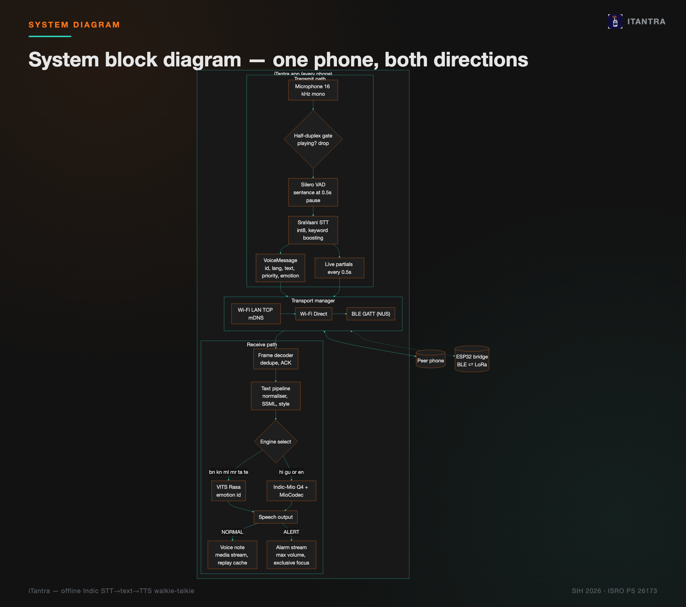
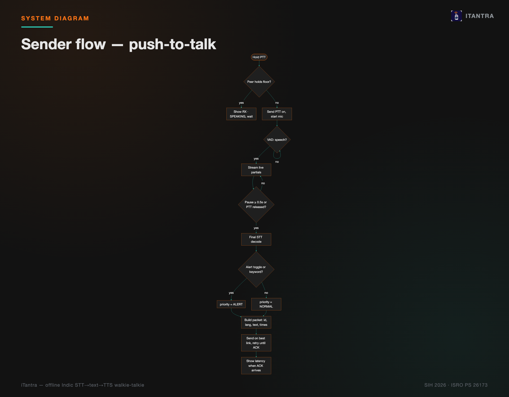
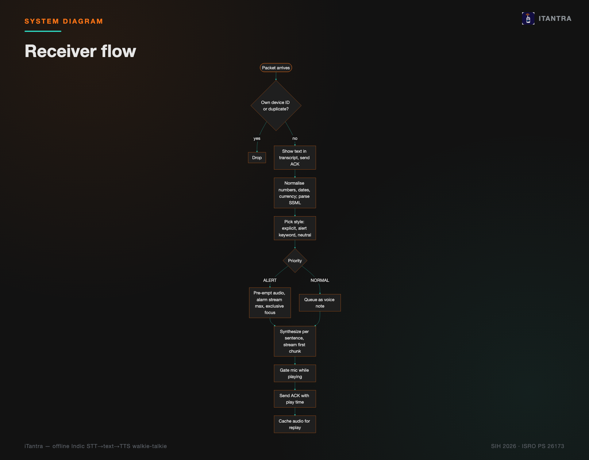
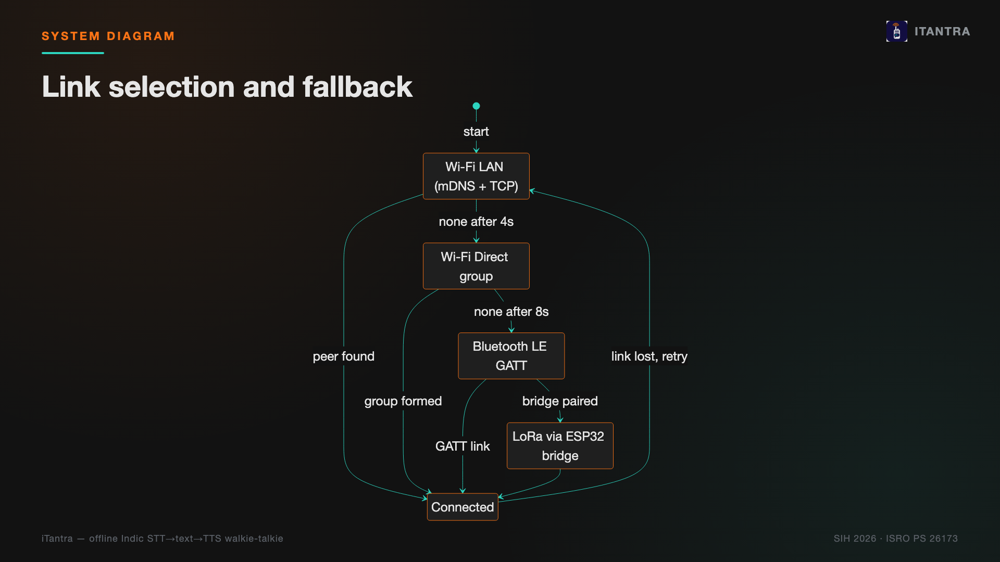
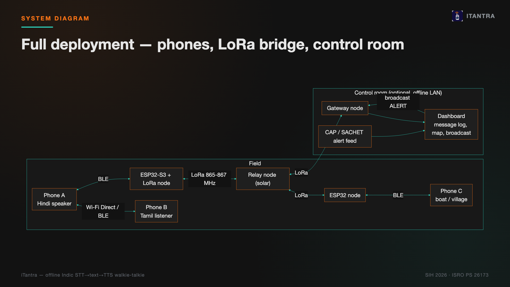
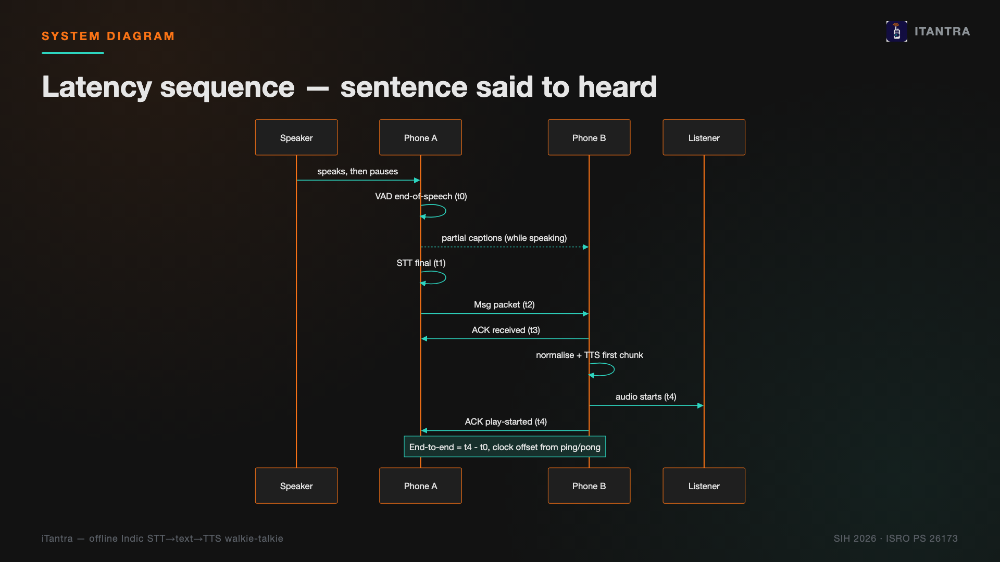
What it looks like
Compose UI in Material 3 Expressive, dark and light themes, all 10 languages.
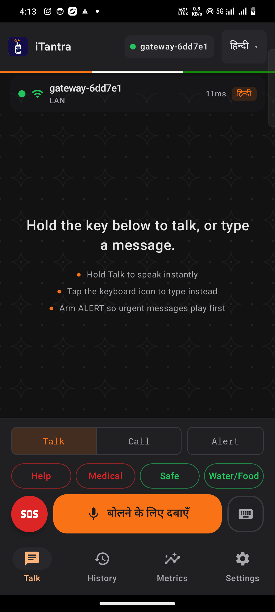
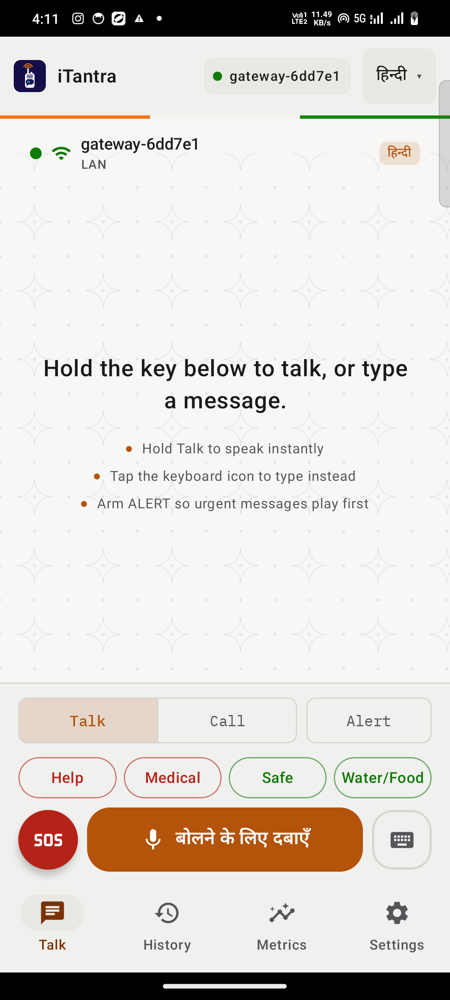
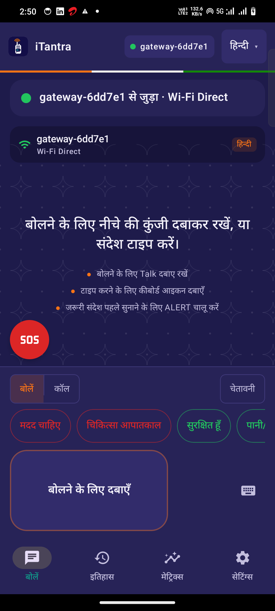
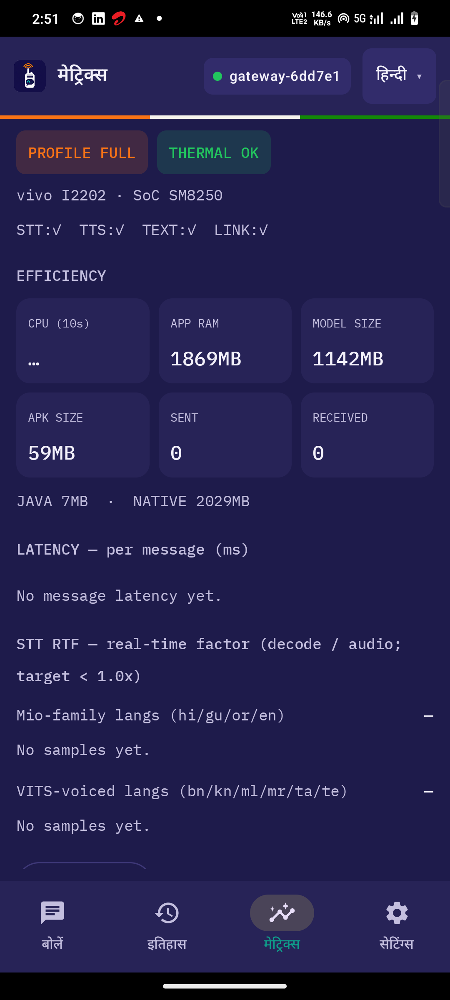
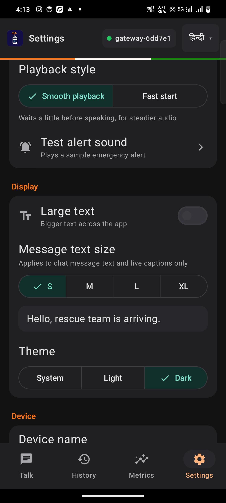
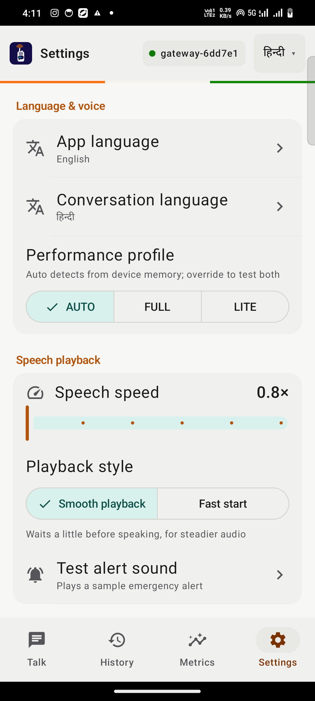
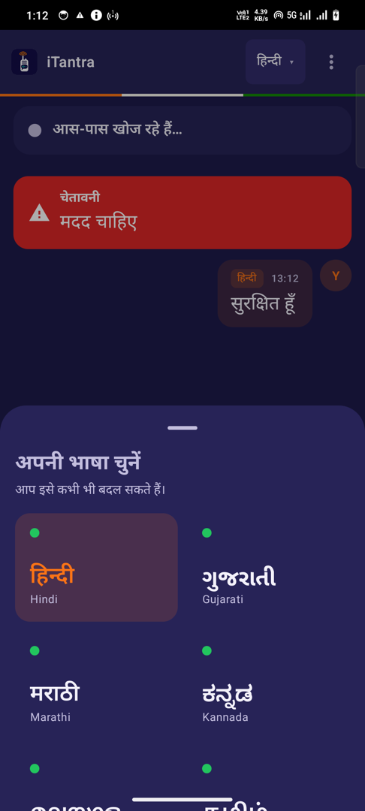
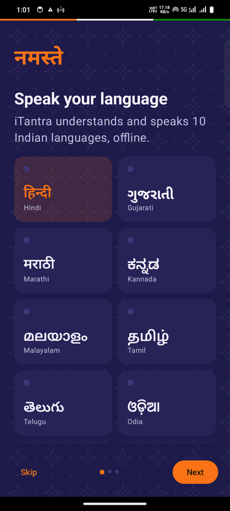
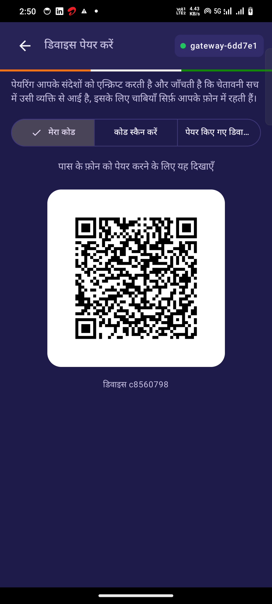
Explainer & live clips
A ~2 minute walkthrough of the whole system. Captions ship as an .srt file beside the video.
Explainer
Individual phone clips
Measured numbers
From the app's own logging on a Snapdragon 870 (vivo I2202) and a Snapdragon 8 Gen 3 (OnePlus 12), plus the transport module's compression benchmark on 310 real FLEURS sentences.
| Metric | Value | Note |
|---|---|---|
| STT word error rate | 5.9% | 10 FLEURS clips, 1/language — preliminary |
| STT real-time factor | 0.05 | 18–22× faster than real time |
| TTS first audio | 0.6–0.95 s | Indic-Mio hi/gu/en; VITS faster |
| End-to-end latency | ≈1.5–2.5 s | sentence said → heard on other phone |
| Idle CPU (PTT mode) | 0.3–1.6% | measured, resource snapshot log |
| App memory, LITE profile | 688 MB | under 6 GB RAM phones |
| Median wire size / sentence | 62 B | binary frame + per-script dictionary, 310 real sentences |
| APK size (arm64) | 60 MB | native runtimes; models side-loaded |
| Message → ACK (Wi-Fi) | ≈41 ms | phone ↔ Mac peer simulator |
Beyond phone-to-phone
ESP32-S3 + SX1262 LoRa bridge
A standalone bridge relays app packets between BLE (phone) and LoRa (India's license-free 865–867 MHz band), so two phones out of Wi-Fi/BLE range of each other can still talk through one or more bridges. Flood-mesh rebroadcast with TTL and de-duplication. Compiled and size-checked (RAM 9.3%, Flash 17.2% on an 8 MB Heltec WiFi LoRa 32 V3) — not yet run on real hardware.
- SF7: ~144–154 ms airtime for an 80-byte sentence — near real-time.
- SF9: ~450–1000 ms — usable push-to-talk, noticeably lagged.
- SF12: 3.3–7.2 s — maximum range, occasional status packets only.
- Bill of materials: about ₹1,900–3,200 per bridge node.
Control-room gateway
A Python gateway joins the phone mesh as a peer (same mDNS discovery, same TCP framing), logs every message to SQLite, and serves a live local dashboard: connected peers, per-language counts, latency percentiles, approximate message locations, a broadcast box, and CAP 1.2 alert ingestion (e.g. NDMA SACHET feeds) that re-broadcasts as a signed ALERT in the listener's language.
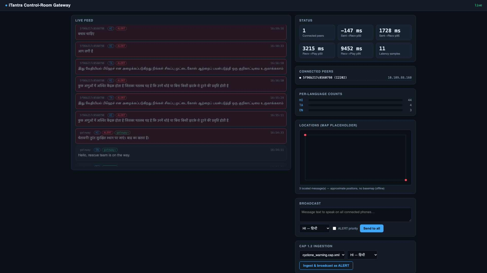
Built entirely on open research
Models
- SraVaani-1.0 STT — ARTPARK, IISc · MIT
- Indic-Mio TTS — SPRING Lab, IIT Madras · Apache-2.0
- VITS Rasa 13 TTS — AI4Bharat · CC-BY-4.0
- Silero VAD · MIT
Runtimes & data
- sherpa-onnx (k2-fsa) · Apache-2.0
- llama.cpp / ggml, mio-tts-cpp · MIT
- Google FLEURS evaluation set · CC-BY-4.0
- AI4Bharat Rasa expressive TTS data · CC-BY-4.0
Alignment
- UN Early Warnings for All · SDG 11 & 13
- NDMA SACHET CAP-based alerting
- Smart India Hackathon 2026
- ISRO Problem Statement 26173